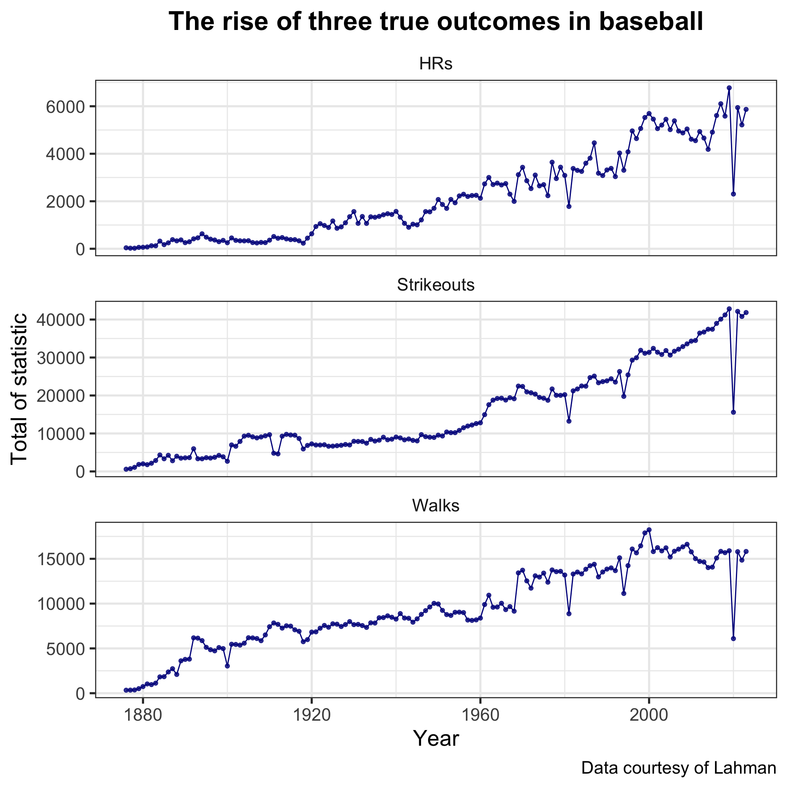

library(tidyverse) # load the tidyverse
library(Lahman) # load the Lahman package to access its datasets
Batting <- as_tibble(Batting) # initialize the Batting datasetExploring data: into the tidyverse
SURE 2025
Department of Statistics & Data Science
Carnegie Mellon University
Data science workflow
Workflow diagram

Exploring data: data wrangling and data visualization
Aspects of data wrangling
import: load in data (e.g.,
read_csv())tidy: each row is an observation, each column is a variable
transform: filter observations, create new variables, etc.
Exploratory data analysis
- What is the goal of EDA?
- to perform initial investigations on the data in order to better understand the data, discover trends/patterns, spot anomalies, etc.
-
- questions about data ⟶ wrangling ⟶ visualization
Exploratory data analysis (cont’d)
Data can be explored numerically (tables, descriptive statistics, etc.) or visually (graphs)
Examples of questions
What type of variation do the variables display?
What type of relationships exist between variables?
- EDA is NOT a replacement for statistical inference and learning
- EDA is an important and necessary step to build intuition
First example: MLB batting
- Import
Battingtable of historical batting statistics from theLahman
First example: MLB batting
- View the first 6 (by default) rows with
head()
# try just typing Batting into your console, what happens?
# also try glimpse(Batting)
head(Batting) # A tibble: 6 × 22
playerID yearID stint teamID lgID G AB R H X2B X3B HR
<chr> <int> <int> <fct> <fct> <int> <int> <int> <int> <int> <int> <int>
1 aardsda01 2004 1 SFN NL 11 0 0 0 0 0 0
2 aardsda01 2006 1 CHN NL 45 2 0 0 0 0 0
3 aardsda01 2007 1 CHA AL 25 0 0 0 0 0 0
4 aardsda01 2008 1 BOS AL 47 1 0 0 0 0 0
5 aardsda01 2009 1 SEA AL 73 0 0 0 0 0 0
6 aardsda01 2010 1 SEA AL 53 0 0 0 0 0 0
# ℹ 10 more variables: RBI <int>, SB <int>, CS <int>, BB <int>, SO <int>,
# IBB <int>, HBP <int>, SH <int>, SF <int>, GIDP <int>Is the
Battingdataset tidy?Each row: a player’s season stint with a team (i.e. players can play for multiple teams in year)
Each column: different measurement or recording about the player-team-season observation (get all column names with
colnames(Batting)ornames(Batting))
Descriptive statistics
Summarize quantitative (e.g. yearID, AB) and categorical (e.g. teamID, lgID) variables in different ways…
- Summary statistics for quantitative variables with the
summary()function
- Counts of categorical variables with the
table()function
Data wrangling with dplyr
The dplyr package
dplyris a package within thetidyversewith functions for data wranglingThe
dplyrdata verbs for manipulating datafilter()select()arrange()mutate()group_by()summarize()
filter()
Use
filter()to extract ROWS (observations) that meet certain conditionsNeed to specify a logical condition (aka boolean expression)
filter()
Example: Extract batting stats for 2 leagues AL and NL only
# A tibble: 110,214 × 22
playerID yearID stint teamID lgID G AB R H X2B X3B HR
<chr> <int> <int> <fct> <fct> <int> <int> <int> <int> <int> <int> <int>
1 aardsda01 2004 1 SFN NL 11 0 0 0 0 0 0
2 aardsda01 2006 1 CHN NL 45 2 0 0 0 0 0
3 aardsda01 2007 1 CHA AL 25 0 0 0 0 0 0
4 aardsda01 2008 1 BOS AL 47 1 0 0 0 0 0
5 aardsda01 2009 1 SEA AL 73 0 0 0 0 0 0
6 aardsda01 2010 1 SEA AL 53 0 0 0 0 0 0
7 aardsda01 2012 1 NYA AL 1 0 0 0 0 0 0
8 aardsda01 2013 1 NYN NL 43 0 0 0 0 0 0
9 aardsda01 2015 1 ATL NL 33 1 0 0 0 0 0
10 aaronha01 1954 1 ML1 NL 122 468 58 131 27 6 13
# ℹ 110,204 more rows
# ℹ 10 more variables: RBI <int>, SB <int>, CS <int>, BB <int>, SO <int>,
# IBB <int>, HBP <int>, SH <int>, SF <int>, GIDP <int>filter()
Example: Extract batting stats for Pirates players in 2022
# A tibble: 68 × 22
playerID yearID stint teamID lgID G AB R H X2B X3B HR
<chr> <int> <int> <fct> <fct> <int> <int> <int> <int> <int> <int> <int>
1 alforan01 2022 1 PIT NL 2 4 0 1 0 0 0
2 alldrca01 2022 1 PIT NL 1 0 0 0 0 0 0
3 allengr01 2022 1 PIT NL 46 118 17 22 4 0 2
4 andujmi01 2022 2 PIT NL 9 36 4 9 3 1 0
5 baeji01 2022 1 PIT NL 10 33 5 11 3 0 0
6 bandaan01 2022 1 PIT NL 23 0 0 0 0 0 0
7 banuema01 2022 2 PIT NL 31 0 0 0 0 0 0
8 bednada01 2022 1 PIT NL 45 0 0 0 0 0 0
9 beedety01 2022 2 PIT NL 25 0 0 0 0 0 0
10 briceau01 2022 1 PIT NL 4 0 0 0 0 0 0
# ℹ 58 more rows
# ℹ 10 more variables: RBI <int>, SB <int>, CS <int>, BB <int>, SO <int>,
# IBB <int>, HBP <int>, SH <int>, SF <int>, GIDP <int>Logical conditions
x < y: less thanx <= y: less than or equal tox == y: equal tox != y: not equal tox > y: greater thanx >= y: greater than or equal to
x %in% y: whether the value is present in a given vectoris.na(x): is missing!is.na(x): is not missingx & y: andx | y: or!x: not
… and basically anything that returns a TRUE/FALSE value
Common mistakes
select()
Use
select()to extract COLUMNS (variables) of interestJust simply specify the column names…
# A tibble: 113,799 × 8
playerID yearID G AB R H HR BB
<chr> <int> <int> <int> <int> <int> <int> <int>
1 aardsda01 2004 11 0 0 0 0 0
2 aardsda01 2006 45 2 0 0 0 0
3 aardsda01 2007 25 0 0 0 0 0
4 aardsda01 2008 47 1 0 0 0 0
5 aardsda01 2009 73 0 0 0 0 0
6 aardsda01 2010 53 0 0 0 0 0
7 aardsda01 2012 1 0 0 0 0 0
8 aardsda01 2013 43 0 0 0 0 0
9 aardsda01 2015 33 1 0 0 0 0
10 aaronha01 1954 122 468 58 131 13 28
# ℹ 113,789 more rowsmutate()
Use
mutate()to create new variablesNew variables created via
mutate()are usually based on existing variablesMake sure to give your new variable a name
Note that naming the new variable the same as the existing variable will overwrite the original column
mutate()
Example: Get the batting average and strikeout-to-walk ratio for every player
# A tibble: 113,799 × 24
playerID yearID stint teamID lgID G AB R H X2B X3B HR
<chr> <int> <int> <fct> <fct> <int> <int> <int> <int> <int> <int> <int>
1 aardsda01 2004 1 SFN NL 11 0 0 0 0 0 0
2 aardsda01 2006 1 CHN NL 45 2 0 0 0 0 0
3 aardsda01 2007 1 CHA AL 25 0 0 0 0 0 0
4 aardsda01 2008 1 BOS AL 47 1 0 0 0 0 0
5 aardsda01 2009 1 SEA AL 73 0 0 0 0 0 0
6 aardsda01 2010 1 SEA AL 53 0 0 0 0 0 0
7 aardsda01 2012 1 NYA AL 1 0 0 0 0 0 0
8 aardsda01 2013 1 NYN NL 43 0 0 0 0 0 0
9 aardsda01 2015 1 ATL NL 33 1 0 0 0 0 0
10 aaronha01 1954 1 ML1 NL 122 468 58 131 27 6 13
# ℹ 113,789 more rows
# ℹ 12 more variables: RBI <int>, SB <int>, CS <int>, BB <int>, SO <int>,
# IBB <int>, HBP <int>, SH <int>, SF <int>, GIDP <int>, batting_avg <dbl>,
# so_bb_ratio <dbl>arrange()
Sort observations (rows) by variables (columns)
- ascending order is the default (low to high for numeric columns, alphabetical order for character columns)
Example: Who holds the single-season home run record?
# A tibble: 113,799 × 22
playerID yearID stint teamID lgID G AB R H X2B X3B HR
<chr> <int> <int> <fct> <fct> <int> <int> <int> <int> <int> <int> <int>
1 bondsba01 2001 1 SFN NL 153 476 129 156 32 2 73
2 mcgwima01 1998 1 SLN NL 155 509 130 152 21 0 70
3 sosasa01 1998 1 CHN NL 159 643 134 198 20 0 66
4 mcgwima01 1999 1 SLN NL 153 521 118 145 21 1 65
5 sosasa01 2001 1 CHN NL 160 577 146 189 34 5 64
6 sosasa01 1999 1 CHN NL 162 625 114 180 24 2 63
7 judgeaa01 2022 1 NYA AL 157 570 133 177 28 0 62
8 marisro01 1961 1 NYA AL 161 590 132 159 16 4 61
9 ruthba01 1927 1 NYA AL 151 540 158 192 29 8 60
10 ruthba01 1921 1 NYA AL 152 540 177 204 44 16 59
# ℹ 113,789 more rows
# ℹ 10 more variables: RBI <int>, SB <int>, CS <int>, BB <int>, SO <int>,
# IBB <int>, HBP <int>, SH <int>, SF <int>, GIDP <int>arrange()
Example: arrange by multiple columns — at bats from high to low (first sort), then home runs from low to high (second sort) — variable order matters
# A tibble: 113,799 × 22
playerID yearID stint teamID lgID G AB R H X2B X3B HR
<chr> <int> <int> <fct> <fct> <int> <int> <int> <int> <int> <int> <int>
1 rolliji01 2007 1 PHI NL 162 716 139 212 38 20 30
2 wilsowi02 1980 1 KCA AL 161 705 133 230 28 15 3
3 suzukic01 2004 1 SEA AL 161 704 101 262 24 5 8
4 samueju01 1984 1 PHI NL 160 701 105 191 36 19 15
5 pierrju01 2006 1 CHN NL 162 699 87 204 32 13 3
6 cashda01 1975 1 PHI NL 162 699 111 213 40 3 4
7 alouma01 1969 1 PIT NL 162 698 105 231 41 6 1
8 reyesjo01 2005 1 NYN NL 161 696 99 190 24 17 7
9 jensewo01 1936 1 PIT NL 153 696 98 197 34 10 10
10 soriaal01 2002 1 NYA AL 156 696 128 209 51 2 39
# ℹ 113,789 more rows
# ℹ 10 more variables: RBI <int>, SB <int>, CS <int>, BB <int>, SO <int>,
# IBB <int>, HBP <int>, SH <int>, SF <int>, GIDP <int>Performing multiple operations
- What if we want to perform several different tasks using multiple
dplyrverbs?
- Introducing the pipe operator
|>
You might have seen the
magrittrpipe%>%…- …from the
maggritrpackage, automatically loaded when loadingtidyverse
- …from the
Recently, many people (including Hadley Wickham) have switched to
|>, the built-in “native” pipe to baseR
The pipe operator
Use
|>to perform a sequence of operationsThe pipe takes an object (e.g., tibble, data frame, matrix, vector, etc.) on the left and passes it as the first argument of the function on the right
Performing multiple operations
Example: Which Pirates players had the highest batting average in 2022, among those with at least 50 at bats?
What are the tasks to be done here?
filter(): only Pirates players in 2022 with at least 50 at batsmutate(): create a new column for batting averagearrange(): sort by batting average in descending orderselect(): report player name, at bats, and batting average
Performing multiple operations
Batting |>
filter(yearID == 2022, teamID == "PIT", AB >= 50) |>
mutate(batting_avg = H / AB) |>
arrange(desc(batting_avg)) |>
select(playerID, AB, batting_avg)# A tibble: 23 × 3
playerID AB batting_avg
<chr> <int> <dbl>
1 newmake01 288 0.274
2 reynobr01 542 0.262
3 hayeske01 505 0.244
4 marisja01 77 0.234
5 perezro02 60 0.233
6 castrro01 253 0.233
7 cruzon01 331 0.233
8 gamelbe01 371 0.232
9 chavimi01 401 0.229
10 vogelda01 237 0.228
# ℹ 13 more rowssummarize() (by itself)
Use
summarize()to collapse the data down to a single row (per group) by aggregating variables into single valuesUseful for computing summaries (e.g., mean, median, max, min, correlation, etc.)
group_by() and summarize()
group_by()converts the data into a “grouped tbl” where operations are performed by group- i.e., it splits the data into groups based on values in a column
group_by()becomes powerful when combining withsummarize()After the operation at the group-level is done, use
ungroup()to remove grouping
group_by() and summarize()
Example: How many home runs, strike outs, and walks did each team accumulate in each season from 2015 to 2019?
Batting |>
filter(yearID %in% 2015:2019) |>
group_by(teamID) |>
summarize(total_hr = sum(HR), total_so = sum(SO), total_bb = sum(BB)) |>
arrange(desc(total_hr))# A tibble: 30 × 4
teamID total_hr total_so total_bb
<fct> <int> <int> <int>
1 NYA 1209 6659 2839
2 HOU 1159 6294 2759
3 TOR 1139 6741 2752
4 LAN 1111 6751 2991
5 BAL 1103 6914 2162
6 TEX 1041 7008 2572
7 SEA 1036 6693 2489
8 MIN 1035 6694 2604
9 OAK 1033 6474 2610
10 MIL 1031 7434 2724
# ℹ 20 more rowsThe lesser-known stars of dplyr
count()
count() returns the number of observations in each group
# A tibble: 7 × 2
lgID freq
<fct> <int>
1 AA 1893
2 AL 52599
3 FL 472
4 NA 737
5 NL 57615
6 PL 149
7 UA 334slice_*() family for subsetting rows
slice(): extract rows (observations) based on the row index
# A tibble: 4 × 22
playerID yearID stint teamID lgID G AB R H X2B X3B HR
<chr> <int> <int> <fct> <fct> <int> <int> <int> <int> <int> <int> <int>
1 aardsda01 2004 1 SFN NL 11 0 0 0 0 0 0
2 abbotgl01 1973 1 OAK AL 5 0 0 0 0 0 0
3 abbotgl01 1975 1 OAK AL 30 0 0 0 0 0 0
4 adamshe01 1949 1 CHA AL 56 208 26 61 5 3 0
# ℹ 10 more variables: RBI <int>, SB <int>, CS <int>, BB <int>, SO <int>,
# IBB <int>, HBP <int>, SH <int>, SF <int>, GIDP <int>slice_*() family for subsetting rows
slice_head()/slice_tail(): extract the first / lastnrows
# A tibble: 5 × 22
playerID yearID stint teamID lgID G AB R H X2B X3B HR
<chr> <int> <int> <fct> <fct> <int> <int> <int> <int> <int> <int> <int>
1 aardsda01 2004 1 SFN NL 11 0 0 0 0 0 0
2 aardsda01 2006 1 CHN NL 45 2 0 0 0 0 0
3 aardsda01 2007 1 CHA AL 25 0 0 0 0 0 0
4 aardsda01 2008 1 BOS AL 47 1 0 0 0 0 0
5 aardsda01 2009 1 SEA AL 73 0 0 0 0 0 0
# ℹ 10 more variables: RBI <int>, SB <int>, CS <int>, BB <int>, SO <int>,
# IBB <int>, HBP <int>, SH <int>, SF <int>, GIDP <int>slice_*() family for subsetting rows
slice_min()/slice_max(): extract rows with the smallest or largest values of a variable
# A tibble: 5 × 22
playerID yearID stint teamID lgID G AB R H X2B X3B HR
<chr> <int> <int> <fct> <fct> <int> <int> <int> <int> <int> <int> <int>
1 bondsba01 2001 1 SFN NL 153 476 129 156 32 2 73
2 mcgwima01 1998 1 SLN NL 155 509 130 152 21 0 70
3 sosasa01 1998 1 CHN NL 159 643 134 198 20 0 66
4 mcgwima01 1999 1 SLN NL 153 521 118 145 21 1 65
5 sosasa01 2001 1 CHN NL 160 577 146 189 34 5 64
# ℹ 10 more variables: RBI <int>, SB <int>, CS <int>, BB <int>, SO <int>,
# IBB <int>, HBP <int>, SH <int>, SF <int>, GIDP <int>slice_*() family for subsetting rows
slice_sample(): randomly sample a specified number / fraction of observation in the data
Useful for performing resampling (e.g., bootstrap, cross-validation, etc.)
Putting it all together
Example: Get batting stats for each year: each row is a year with the following variables
- total hits, home runs, strikeouts, walks, atbats
- total batting average for each year = total H / total AB
- only keeps AL and NL leagues
yearly_batting <- Batting |>
filter(lgID %in% c("AL", "NL")) |>
group_by(yearID) |>
summarize(total_h = sum(H, na.rm = TRUE),
total_hr = sum(HR, na.rm = TRUE),
total_so = sum(SO, na.rm = TRUE),
total_bb = sum(BB, na.rm = TRUE),
total_ab = sum(AB, na.rm = TRUE)) |>
mutate(batting_avg = total_h / total_ab)Putting it all together
What are the top three years with the most HRs?
# A tibble: 3 × 7
yearID total_h total_hr total_so total_bb total_ab batting_avg
<int> <int> <int> <int> <int> <int> <dbl>
1 2019 42039 6776 42823 15895 166651 0.252
2 2017 42215 6105 40104 15829 165567 0.255
3 2021 39484 5944 42145 15794 161941 0.244# A tibble: 3 × 7
yearID total_h total_hr total_so total_bb total_ab batting_avg
<int> <int> <int> <int> <int> <int> <dbl>
1 2019 42039 6776 42823 15895 166651 0.252
2 2017 42215 6105 40104 15829 165567 0.255
3 2021 39484 5944 42145 15794 161941 0.244Putting it all together
Which years have the best and worst strikeout to walk ratios?
yearly_batting |>
mutate(so_bb_ratio = total_so / total_bb) |>
arrange(so_bb_ratio) |>
slice(c(1, n()))# A tibble: 2 × 8
yearID total_h total_hr total_so total_bb total_ab batting_avg so_bb_ratio
<int> <int> <int> <int> <int> <int> <dbl> <dbl>
1 1893 15913 460 3341 6143 56898 0.280 0.544
2 1879 6171 58 1843 508 24155 0.255 3.63 What’s next?
DATA VISUALIZATION
The simple graph has brought more information to the data analyst’s mind than any other device. — John Tukey
Use
ggplot2(and the grammar of graphics) to visually explore dataMore intuitive than base
RplottingDifferent types of visualizations for categorical and quantitative data, faceting, etc.
dplyrverbs and|>leads to natural pipeline for EDA
